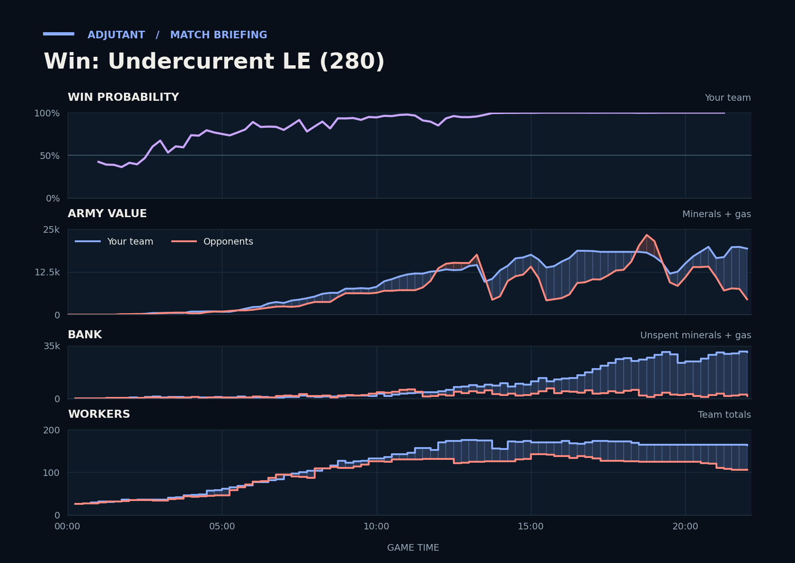

Win: Undercurrent LE (280)
Provisional debrief. The full report (timeline, insights and analysis) is being generated.

Cached narration uses different analysis inputs (facts, engine notes, prompts or model settings). It has not been regenerated for this report.
**Win.** You won because the trade went your way at TakeTheTip's sixth: the opponents lost about twice the army you did, and then typed gg.
**Why**
- 1:54-3:24: TakeTheTip's Zerglings and a Drone destroyed Jabberwock's cannons and pylons, and Jabberwock's income later dropped to 542 a minute.
- 8:32-8:41: Scallop's Banshees killed Drones and destroyed LbforLbGOAT's Spire, leaving LbforLbGOAT with no Spire until 16:35.
- 20:35-21:53: TakeTheTip's Lurkers and Hydralisks killed 20 Stalkers while Scallop's Battlecruisers killed Brood Lords, and Jabberwock typed gg soon after.
Current engine analysis: Win. Review 1:54–3:24: you won a fight (900 killed, 350 lost). The biggest fight came at 20:13–21:53 (8,100 lost, 16,125 killed).